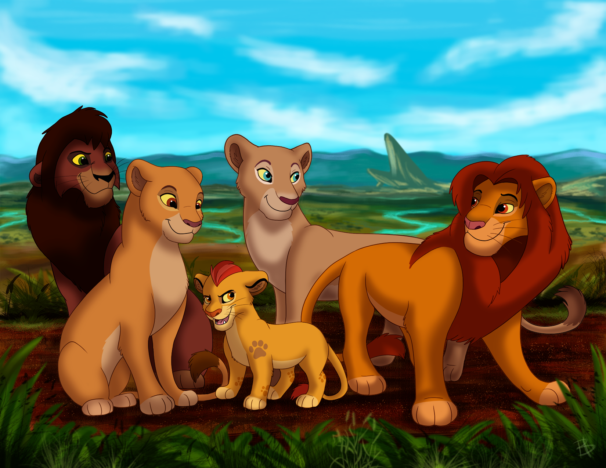

|
|
Симба
Навигация
Симба — сын Короля-льва Муфасы и королевы Сараби, племянник Шрама. В детстве был неугомонным и любопытным львёнком, из-за чего часто попадал в неприятности. После внезапной смерти отца (в которой винит себя) львёнок был вынужден покинуть родное королевство. За пределами родины львёнка приютили и воспитали сурикат Тимон и бородавочник Пумба, и бок о бок с ними беглый юный принц живёт беззаботную и лёгкую жизнь. Став взрослым, Симба встречается с духом погибшего отца, убедившего его в истинном предназначении. Прозревшему и разобравшемуся в себе принцу предстояло вернуться и спасти Земли Прайда от окончательного упадка.

Семья
- Муфаса(отец)
- Сараби(мать)
- Шрам(дядя)
- Нала(супруга)
- Киара(дочь)
- Кову(зять)
Видео
Характеристики
| Тип | лев | Пол | мужской | Дата рождения | 18 августа | Характер | смелый | Друзья | Тимон и Пумба |
| Все используемые материалы взяты с Викепедии | Kiber One, 2022 Малых Анастасия Денисовна |